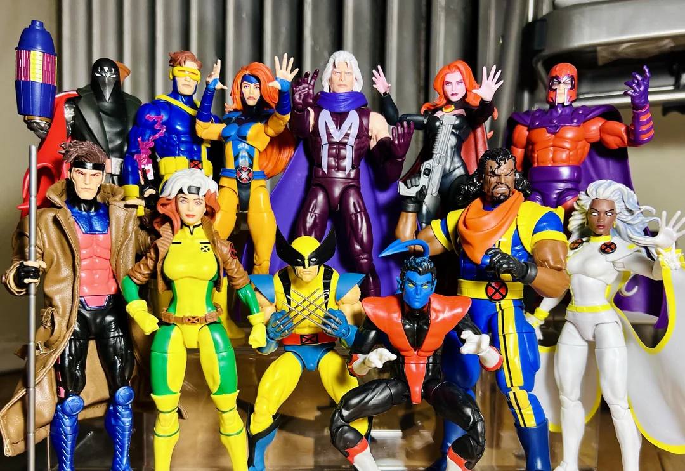
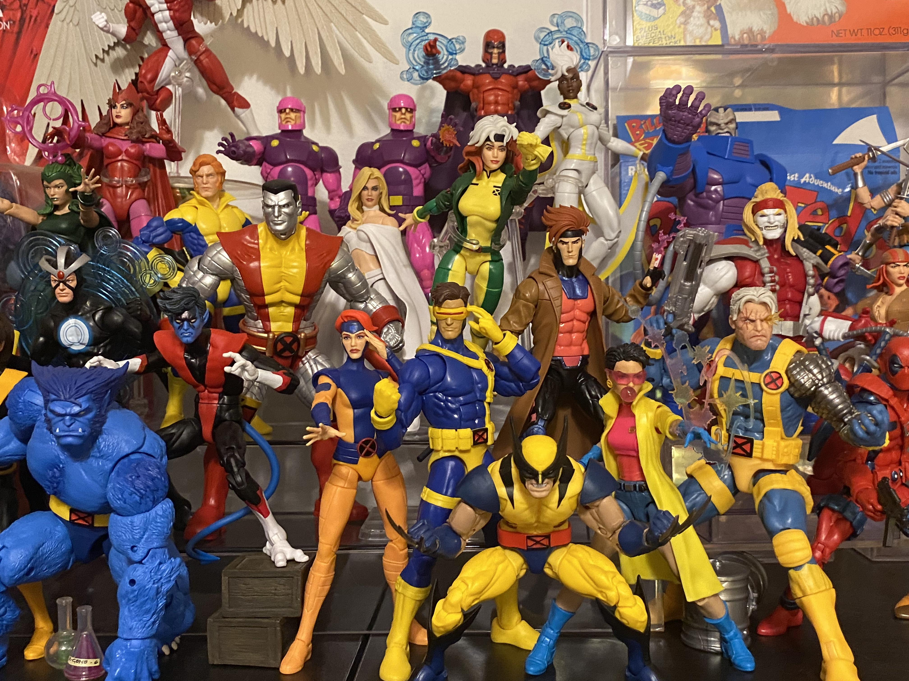
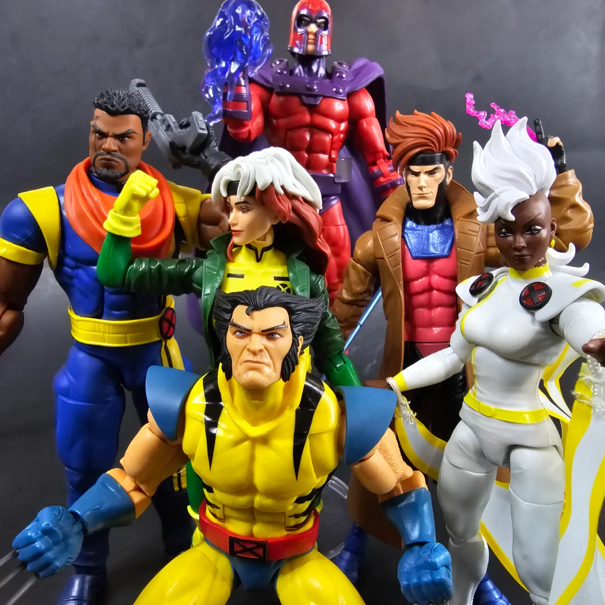
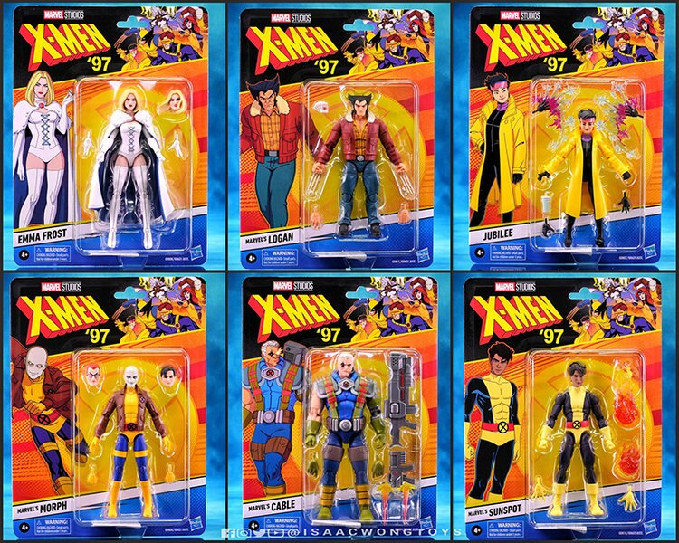
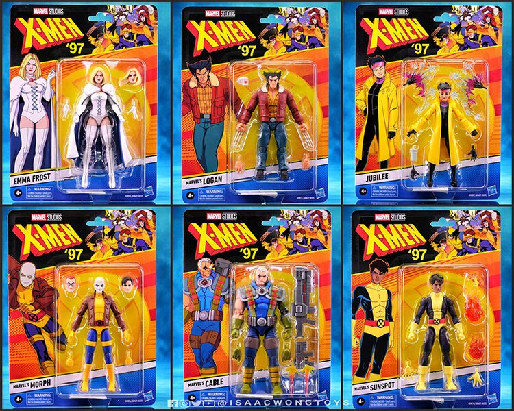
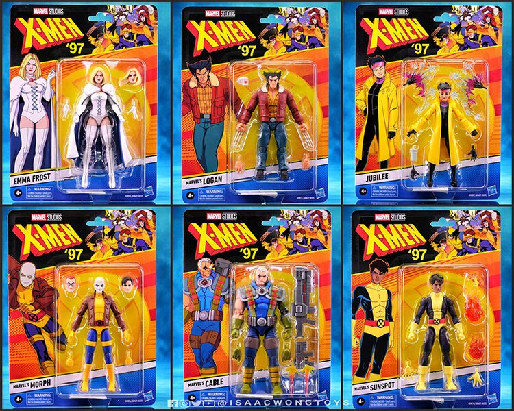
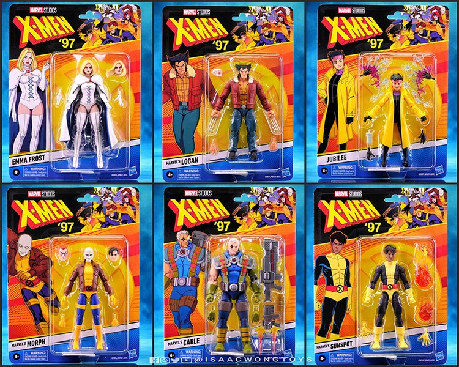

 


Starting your very own collection from the countless series & films you love? Look no further than CAPTURED IN ACTION!

As shown from a patron user of the website, we helped him rediscover his childhood love for Marvel's X-Men in the form of MARVEL LEGENDS action figures released in collaboration with the X-Men '97 animated series.